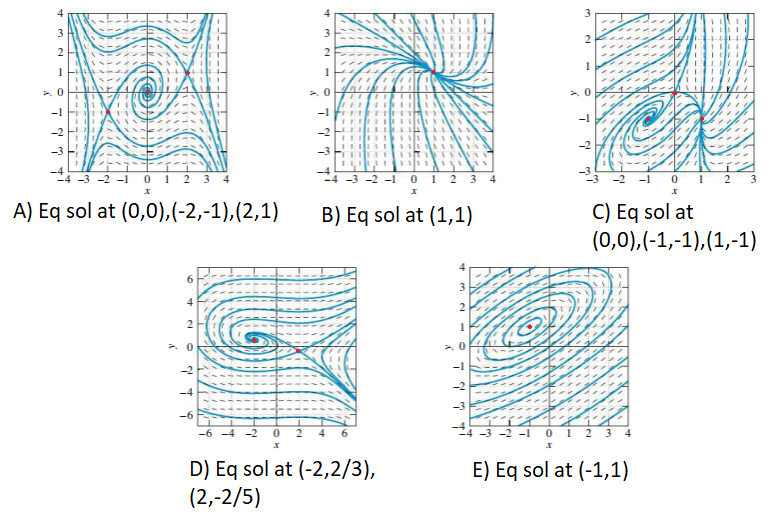

\(\displaystyle \frac{dx}{dt} = x - y - x^2 + xy,\hspace{1cm} \frac{dy}{dt} = -y -x^2\)

Example - Rabbits and Sheep
Consider a population of rabbits, \(x\), and sheep, \(y\) that have dynamics
$$x' = x(3-x) - 2xy,$$
$$y' = y(2-y) - xy.$$
Describe each term in the equations above using common language.
How is \(x\) behaving in the absence of \(y\)?
What about \(y\) in the absence of \(x\)?
How do \(x\) and \(y\) affect each other?
Find any equilibrium solutions.
Calculate the Jacobian matrix.
Classify the equilibrium solutions you have found.
Sketch a phase plane with some solutions. Describe how the solutions relate back to the topic of rabbits and sheep.
Example - Bacteria
Consider a petri dish with two strains of bacteria, \(x\) and \(y\), with the dynamics below.
$$x' = 2x(7-x) - xy,$$
$$y' = 2y(8-x) - xy.$$
Describe each term in the equations above using common language.
How is \(x\) behaving in the absence of \(y\)?
What about \(y\) in the absence of \(x\)?
How do \(x\) and \(y\) affect each other?
Find any equilibrium solutions.
Calculate the Jacobian matrix.
Classify the equilibrium solutions you have found.
Sketch a phase plane with some solutions. Describe how the solutions relate back to the topic of bacteria in a petri dish.
Example - Is it a center?
Consider the system below.
$$x' = -y + ax(x^2 + y^2)$$
$$y' = x + ay(x^2 + y^2)$$
Verify (0,0) is an equilibrium solution.
Use linearization (analyze Jacobian) to classify this equilibrium solution.
Can you think of any reason why your analysis above might not be valid?
Consider a transformation to polar coordinates for this system.
$$r^2 = x^2 + y^2$$
$$\tan\theta = \frac{y}{x}$$
Find an equation for \(r'\) and show \(\theta' = 1\).
Analyse the equilibrium solution at \(r=0 \Leftrightarrow (0,0)_{x,y}\) in terms of \(a\).
Example - springs again
So far we have considered spring that obey Hooke's Law \(F = -kx\). Consider a nonlinear spring with the force below.
$$F = -kx - \beta x^3$$
Does the spring get stiffer or weaker if \(\beta > 0\)?
Let \(m=1, k = 4\) and neglect damping forces. Find the equilibrium solutions if \(\beta = 1\) and \(\beta = -1\).
For the \(\beta = -1\) case, classify any equilibrium solutions using linearization.
For the \(\beta = 1\) case, classify any equilibrium solutions using linearization.
Add a damping term \(bx'\) to your system with a weaker spring. Find and classify any equilibrium solutions and sketch a phase plane.
Example 4 - Final Review
Find a general solution to \(\frac{dy}{dx} = \frac{1}{x^2 -1}\).
Find a particular solution to \(\frac{dx}{dt} = \frac{1}{1 + t^2}, x(0) = 0\).
Find a general solution \(x \frac{dy}{dx} + y = x^3\).
Find a basis for the nullspace of the matrix \(A = \begin{bmatrix}-1 & 1 & 2 & 4\\2 & 0 & 1 & -7\end{bmatrix}\).
Use Gaussian Elimination to find the inverse of \(A = \begin{bmatrix} 1 & 3 \\ 2 & 7\end{bmatrix}\). Verify your solution by using a known formula for the inverse of a 2x2 matrix.
Use the method of undetermined coefficients to find a solution to \(y'' - 4y' - 12y = 3e^{5t}\).
Find a solution to \(x''' - 4x' = 0\).
How many solutions are there to the system below?
$$1x - y + 2z = -3$$
$$4x + 4y - 2z = 1 $$
$$-2x + 2y - 4z = 6$$
Consider a 100 gallon water tank that contains fresh water. Saltwater with concentration 2 lbs per gallon is pumped in at a rate of 10 gallons per minute.
The saltwater is perfectly mixed and flows out at a rate of 10 gallons per minute. How much time needs to pass before there is 10 lbs of salt in the tank?
Example 5 - More equilibria
Find and classify the equilibrium solutions to the system below.
$$ x' = y^2 -1 $$
$$ y' = x^3 - y$$
video